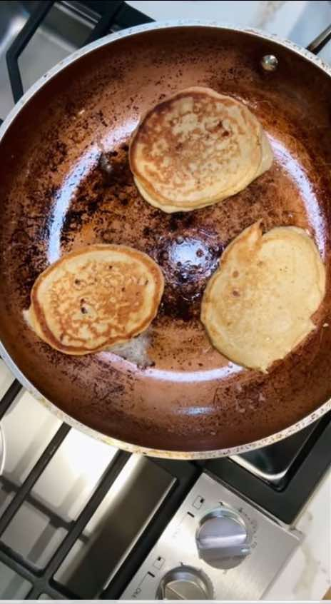

Amateur Pancakes
Breakfast
PrepPT0S
CookPT0S

Ingredients
- 1 cup cottage cheese, blended
- 2 eggs
- 1/2 tsp vanilla
- 1/4 cup milk
- 1/2 tsp cinnamon
- 1 cup oat flour
- 1/4 tsp baking powder
- Dash of salt
Directions
- Cook on medium low in some butter for a few minutes on each side.
- Even a fool could do this.
- You just saw. Trust me.
This page includes Schema.org Recipe structured data for recipe importers.